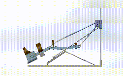
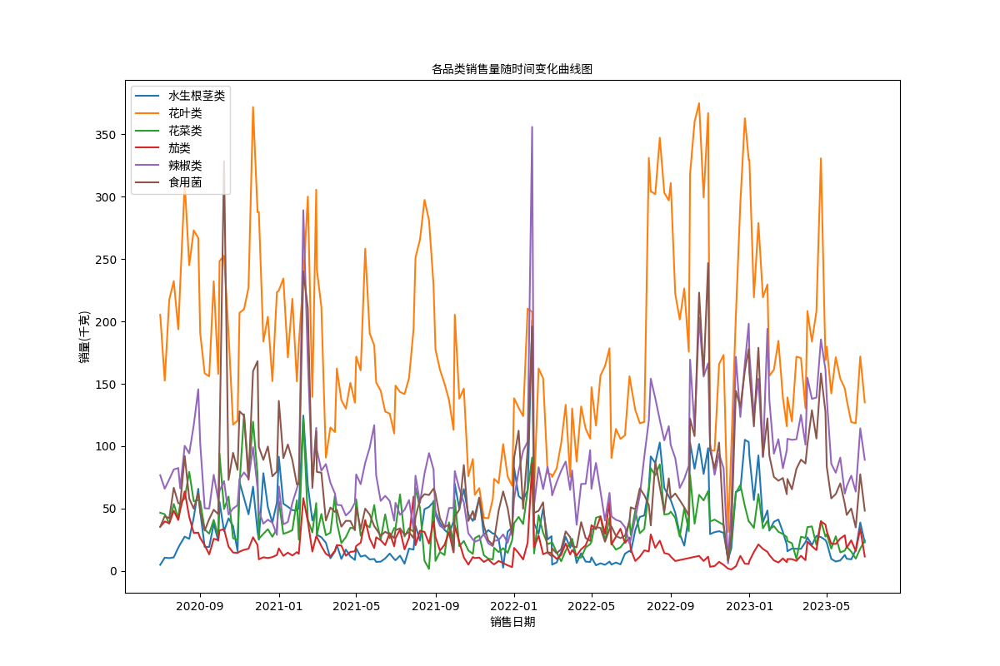
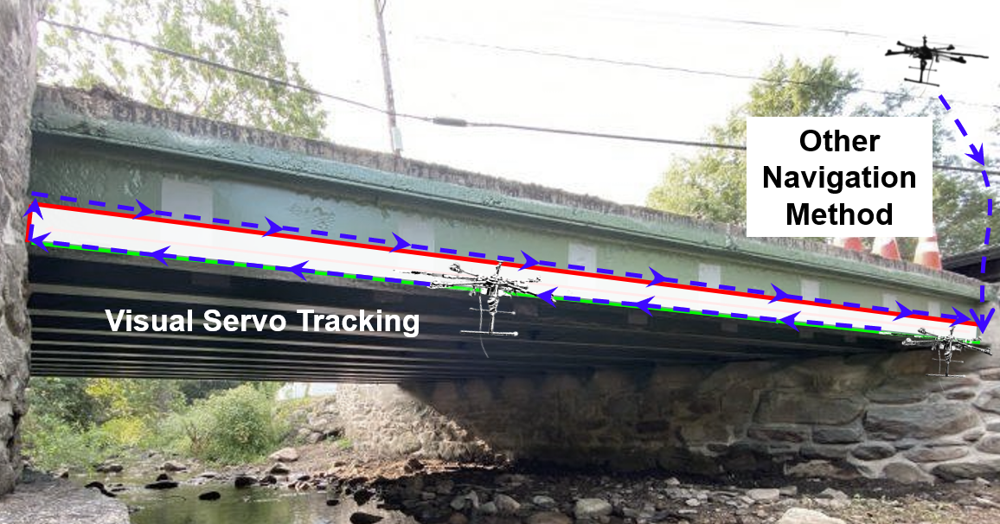

|
Jiarui LI(李佳睿) Hello, everyone! My name is Jiarui Li. My research interest lies in computational imaging and tracking for robots. Now, I am in my third year of Qingdao University in Computer Science as an undergraduate student. During the three years, I have been fortunate to work closely with Prof. Dongming Xing and Dr. Zeyu Xiao on several research projects regarding medical robots and computational imaging. Also, great thanks to Prof. Xin Yuan and Prof. Junyi Geng for guidance and cooperation. |

|
ResearchMy research work and interests include computer vision, machine vision especially for robots, computational imaging, medical robots and so on. Beblow are the projects that related to these areas. |

|
Document Shadow Removal [in progress] We proposed a new architecture for document shadow removal, and this architecture combines with mask estimation, feature fusion based on UNet which shows state-of-the-art on SD7K dataset. Thanks to Dr. Zeyu's advice and cooperation. |
|  |
Bone Traction Robots We design a parallel traction robot for bone traction. Our method solves two main problems. One is about misalignment of lines. We design an auto angle adjustment system based on exoskeleton to achieve parallel traction effect. The other is that we use continuous changes in traction weight replace discrete changes in traction weight. |
|  |
National College Students Mathematical Contest in Modeling In this project, we design a mathematical model for the prediction on sales in the supermarket. We establish a time series model for the prediction sales in the next 7 days combined with many factors. And we also display heat map and linear regression map based on python. |
|
Computer Graphics Project [in progress] This project is about my computer graphics fundamentations final project. I construct the 3D object model by computer graphics basic algorithm based on OpenGL. And I realize the geometric transformation, three-dimensional observation transformation and the function of rendering and interaction on the model of a rectangle. |
|
|  |
Track for Robots I did this project for robot line detection. I try to redisplay TCTrack to test that method's effect on line detection. And I try to combine "deep hough transform" amd "TCTrack" to get a good effect on line detection for robots. |
Education |


|
Many thanks to the source code. |